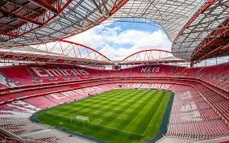
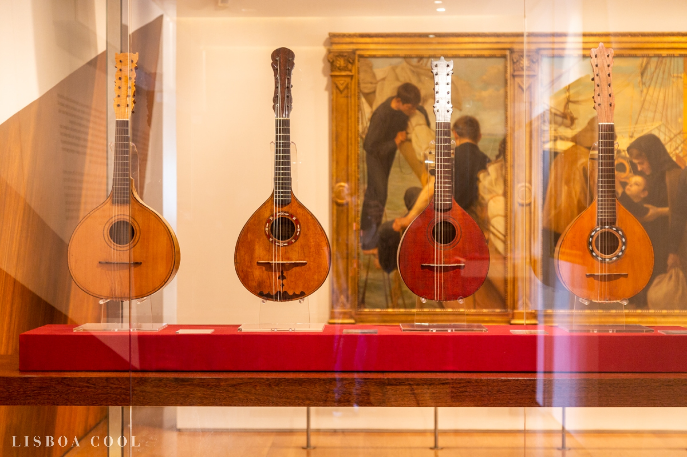
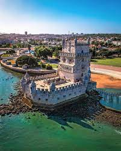
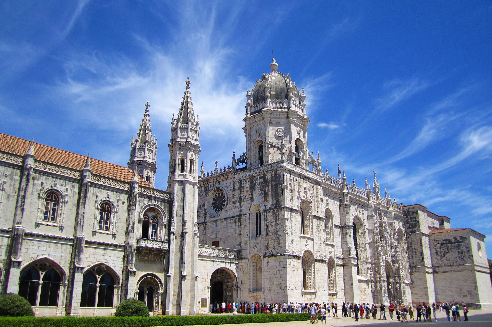

Attractions & sights
Sport Lisboa e Benfica
Visit “Estádio da Luz”, the largest and most modern stadium in Portugal, stage of the Champions League final in 2014. Join ours tours, which take place every 20 minutes, and have a great experience. You can go near the pitch, to the dressing room, visit the Press Conference Room, take a photo with “Vitória”, the eagle and much, much more! Relive Eusébio’s best moments, the greatest Benfica legend, while you also learn more about the Lisbon, Portugal and the World’s History at Benfica Cosme Damião Museum. An innovative Museum with a contemporary approach, that resorts to the most modern technologies to emphasize knowledge, emotion and the experience.
Museum of Fado
The Museu do Fado is one of the must-visit places in Lisbon. Besides representing one of the region’s most important cultural legacies, it also has a restaurant and a themed shop where you can spend some time to catch the spirit of saudade (nostalgia).Totally devoted to fado and the guitar, it has a permanent exhibition and temporary ones, alongside a document centre and an auditorium with regular events and a very interesting programme. With songs by the greatest Portuguese artists illustrating an art form that Portugal gave to the world, the museum’s artistic quality will surprise you. The restaurant serves typical Portuguese food and helps to give your visit a traditional flavour. But technology, in the form of interactive stations documenting fado’s history throughout the museum and audioguides allowing you to listen to dozens of fado songs composed and sung down the decades, lets you delve further into history. Time and the music fly, in a restored building of national interest right next door to the neighbourhoods where you can hear fado being sung at night.
Belem Tower
The Belém Tower (Torre de Belém) was built between 1514 and 1520 in a Manuelino style by the Portuguese architect and sculptor Francisco de Arruda. It was classified as a World Heritage Site in 1983 by UNESCO. Constructed on the northern bank of the Tagus River, this tower was used to defend the city. Years later, it was transformed into a lighthouse and customs house. It's located right by the Jerónimos Monastery, so we recommend visiting them on the same day.
Jerónimos Monastery
The Jeronimos Monastery is, along with the Belem tower, the most important tourist attraction in Lisbon, inside which lies the tomb of Vasco de Gama.
Elevador de Gloria

The Elevador da Glória is one of the three funiculars in Lisbon. Sung about in the music of one of the most avant-garde Lisbon bands of the 80s, the Elevador da Glória links Baixa to Bairro Alto – more specifically Praça dos Restauradores to Miradouro de São Pedro de Alcântara. It lets you turn a steep climb into a romantic moment and was opened in 1885 as the second of its kind in the city. Although it was only electrified in 1915, it still retains its original characteristics. The counter-circulating pulley system known as the Subida à Glória, for use by both amateur and professional cyclists, has been recently renovated. But it’s better to enjoy the comfort of the benches and jerks of the ascent to rest a little before seeing the breathtaking view at the miradouro.